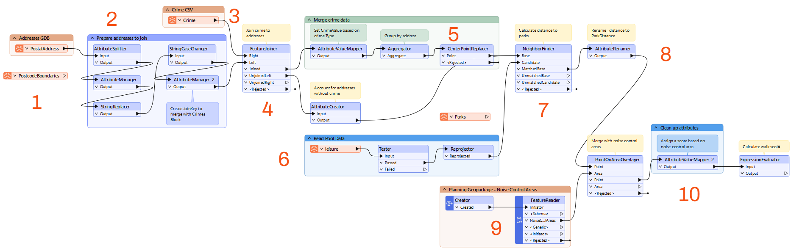
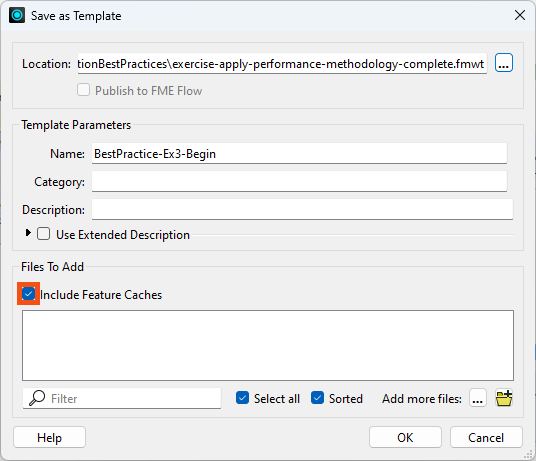
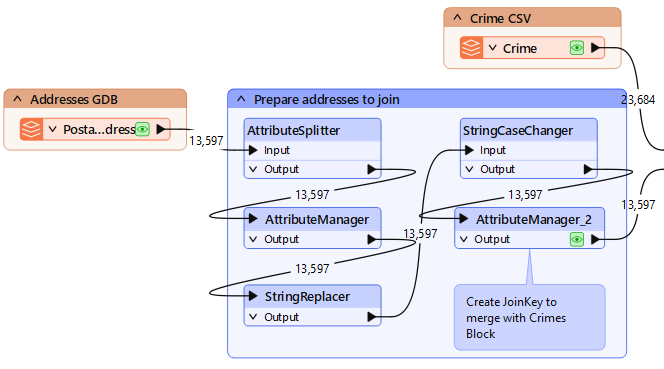

Your colleague has modified the workspace slightly, so it won't match this diagram exactly, but it's close enough to understand how it works.
After completing this lesson, you’ll be able to:
You have been assigned to a project to calculate the "walkability" of each address in the city of Vancouver. Walkability measures how easy it is to access local facilities on foot. The starting workspace calculates a walkability score based on several criteria.
In this exercise, we will modify our workspace to improve its performance.
Start FME Workbench (2025.1 or later) and open the starting workspace.
Run the workspace to create data caches while you complete step #2.
The workspace is unorganized. Let’s examine it in sections to figure out how it works.
Your colleague has modified the workspace slightly, so it won't match this diagram exactly, but it's close enough to understand how it works.

Let's save the workspace as a template file. This step will let us measure how much data the workspace is storing in its caches. Once we make performance improvements, we can save the template again to compare the sizes and see how much we've improved performance.
First, make sure you have run the workspace and have data caches.
Then, in the menu, go to File > Save As Template. You can save it to whatever location you wish. When prompted, be sure to have the Include Data Caches option checked:

Now if we come back to this project later or share it, the user can reopen the template and have all our cached data ready for use.
Check the size of the template file that you just created. You'll see that it is over 40 MB in size, which is fairly large for a template. It's not a problem to have a large template file, but it does indicate a lot of data is being cached and that this could affect the workspace's performance.
Note the size of the template; you will need this value for a quiz question.
One aspect of data is the number of attributes and lists. Since there are a lot of additional attributes to remove but only a few we need to keep, we will use the AttributeKeeper transformer. Place the AttributeKeeper between the AttributeValueMapper_2 and the ExpressionEvaluator transformers:

Use the AttributeKeeper's Attributes to Keep parameter to keep only CrimeValue, NoiseZoneScore, and PoolDistance. Take note of the names of the attributes that we are not keeping. We might be able to remove them earlier in the workspace.
If you inspect a single feature in the Aggregator's Output port cache in the Record Information window, you will see it stores a lot of attributes like CrimeList{}.City or CrimeList{}.Block.
The final output of the workspace is a single score, so keeping all of these component attributes that were used to calculate the score is not necessary. These excess attributes clutter the display and inspecting the output becomes hard. Keeping these unused, large attributes also slows the performance of the workspace - even if that's mitigated by using caches during development. The AttributeKeeper we added removes CrimeList eventually, but consider that all those extra attributes are present on features processed between the Aggregator and the AttributeKeeper. This clutter slows down the workspace.
If you have identified a troublesome attribute on a feature but are unsure where it is being generated, you can track it down by pressing Ctrl+F and searching for its name. Try this with CrimeList. The search results show up in the Navigator window, and there you will find the Aggregator transformer is creating CrimeList.
Check the parameters for the Aggregator transformer and turn off the Generate List parameter, to prevent the list from being created. This step will cause many caches to become stale, but we will re-run the workspace shortly to solve this.
Another reason a workspace is running slowly is if you are reading in extra data that is not being used. It looks like the original author read in the PostcodeBoundaries feature type from the Addresses.gdb. Additionally, they must have originally calculated walking distance to parks instead of pools, and they didn't remove the Parks feature type once we were done with it. Delete both of those now and click Yes on any warnings that pop up.
Another source of excess caching is transformers producing output that we don't need to inspect. These can be prevented by hiding these transformers within a collapsed bookmark.
Find the bookmark around all of the transformers between the PostalAddress reader and the FeatureJoiner:

Now we can collapse the bookmark and then when we re-run the translation only the last transformer will have a cache. To collapse the bookmark, click on the arrow beside the bookmark name:

Now run the workspace by clicking on the ExpressionEvaluator and choosing Run to This or just click the run button.
The workspace will run and data will be cached, but for the collapsed bookmark, only one cache will be created for its five transformers. Attributes unnecessary to the output will also be removed by the AttributeKeeper.
Save the workspace as a new template and check the option to include caches. Check the file size of the new template. It should be considerably smaller. Note its size; you will need it to answer a quiz question!